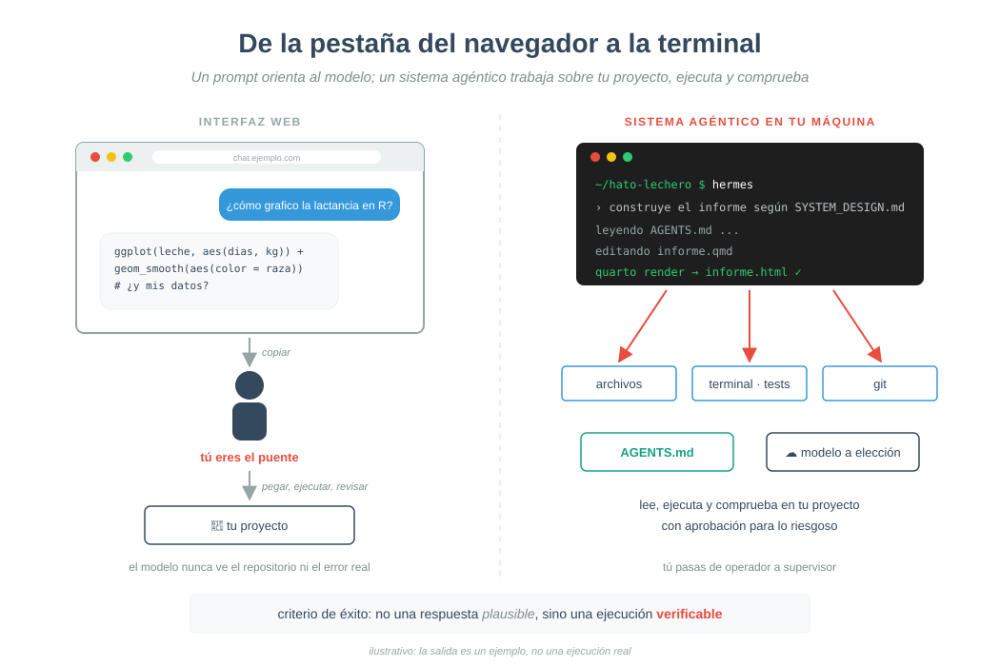
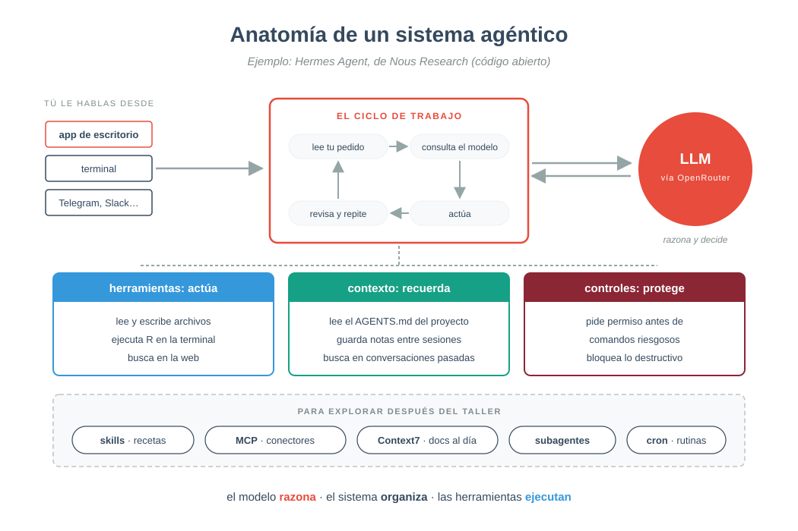
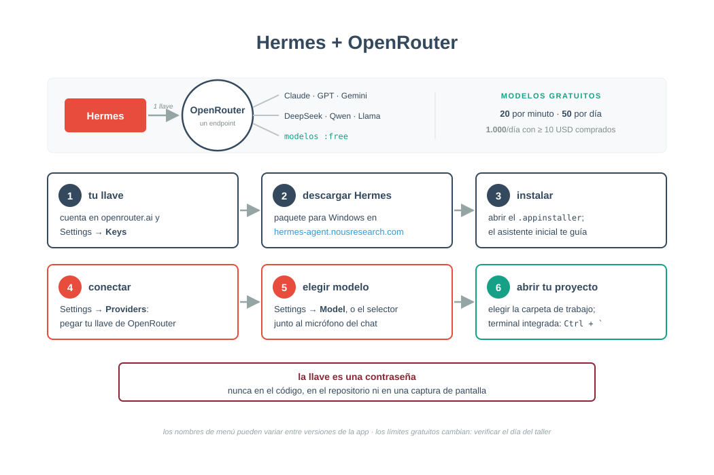
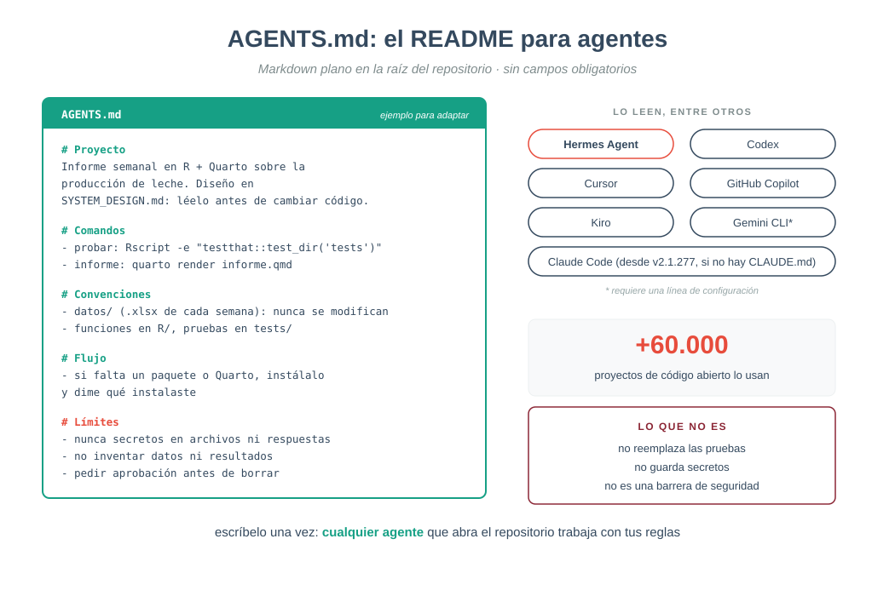
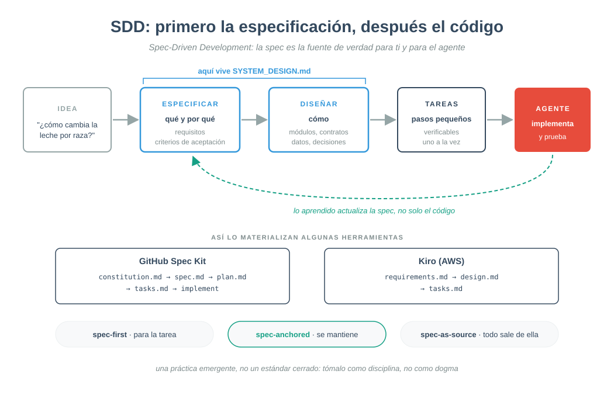
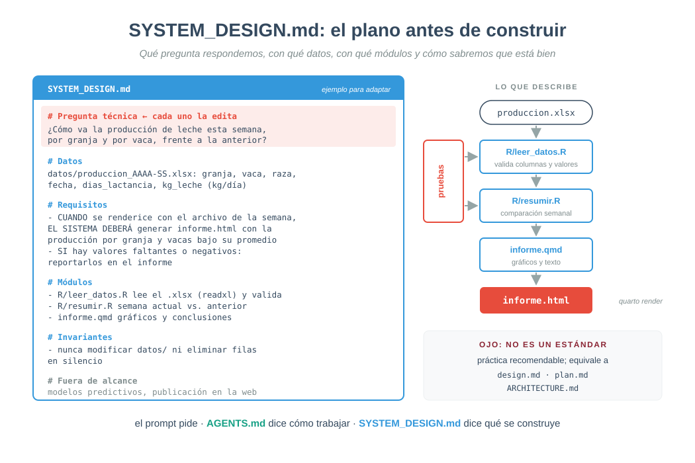
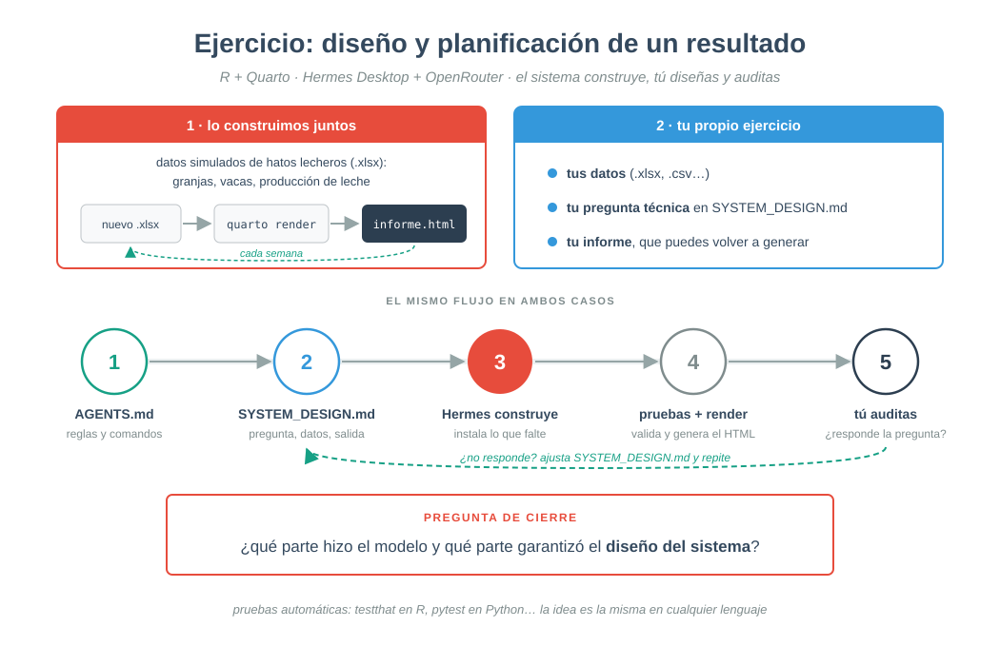
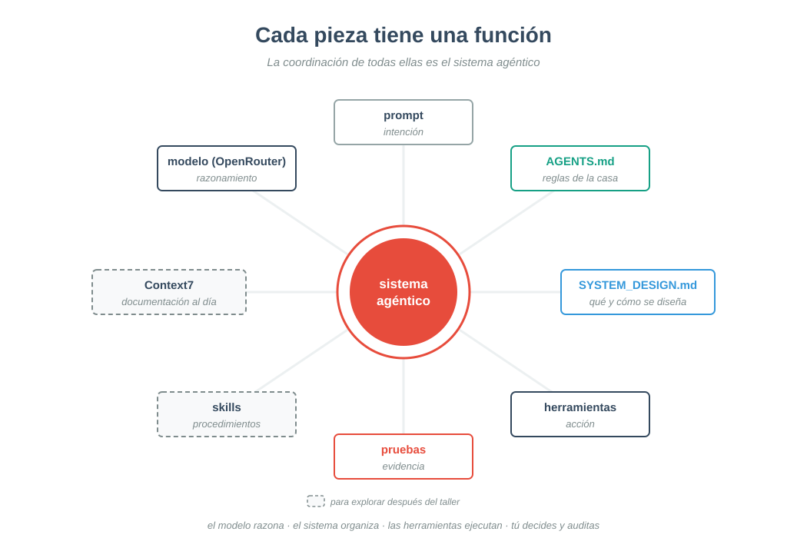
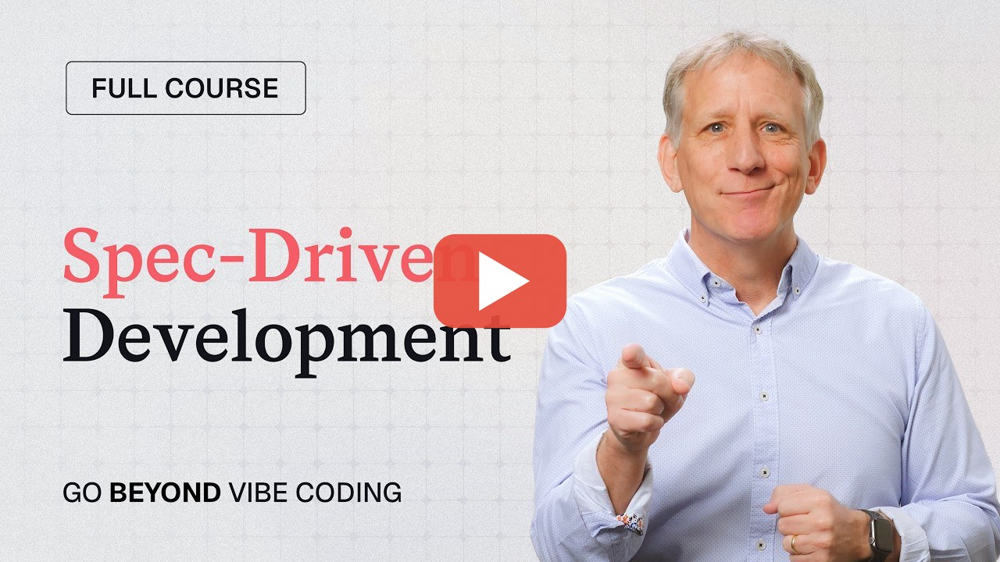
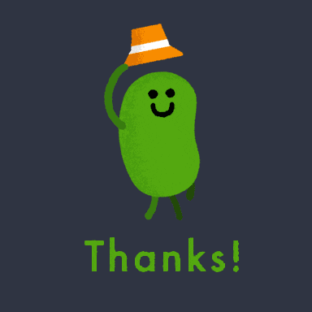

OpenRouter y el desarrollo guiado por especificaciones
2026-10-13


Hermes Agent · Para explorar: skills · MCP · Context7 · subagentes · cron

OpenRouter · crear llave · modelos gratuitos · límites · descargar Hermes · guía de la app de escritorio

agents.md · Agentic AI Foundation · archivos de contexto en Hermes · AGENTS.md en Claude Code

GitHub Spec Kit · Kiro: specs · B. Böckeler, martinfowler.com · Thoughtworks Radar

A. Kladov, ARCHITECTURE.md · requisitos en notación EARS (Kiro) · readxl · Quarto

testthat (R) · pytest (Python) · readxl


Full Course: Spec-Driven Development with Coding Agents · DeepLearning.AI · clic en la imagen para verlo en YouTube

edimer.netlify.app/es